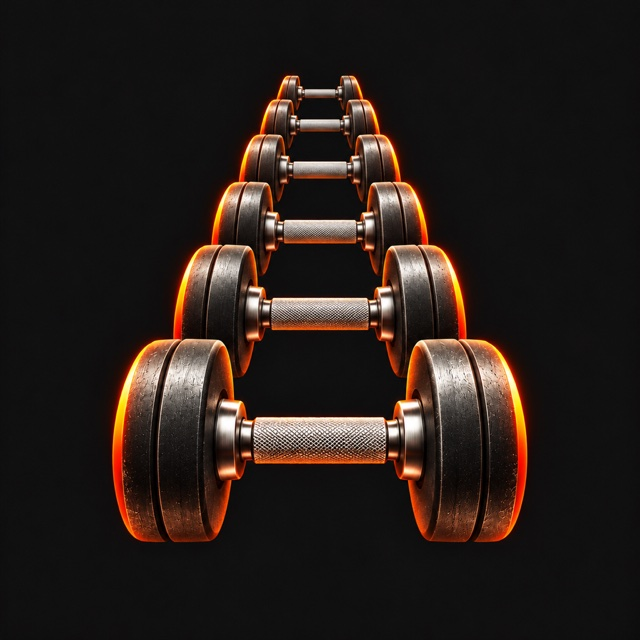

Walk in with a plan.
Create your own routine, start from a program template, or generate a workout around your schedule and goals.
Programs & exercise library
YOUR TRAINING. ON TRACK.
A clear plan. A focused workout. Progress you can see. Bring your strength training together on your iPhone.
Explore Train Track ↗Built for iPhone · No account. No ads. No tracking.
FROM YOUR FIRST SET TO YOUR NEXT BEST
Create your own routine, start from a program template, or generate a workout around your schedule and goals.
Programs & exercise libraryFollow your session set by set. Log weight, reps, and effort, with warm-ups, supersets, and a rest timer on your Lock Screen.
Guided logging & Live ActivitiesFollow your lifts over time, celebrate personal records, and explore your muscle coverage. Choose how your plan progresses.
Records & progress chartsPERSPECTIVE, WHEN YOU NEED IT
Ask the on-device Coach about your progress, a stalled lift, or what to focus on next. It works from a summary calculated from your training history.
Coach requires a compatible iPhone with Apple Intelligence available. Fitness guidance is not medical advice.
PRIVATE BY DESIGN
Your routines, workout history, and Coach conversations live on your phone. Optional Apple Health integration, local backups, and export tools keep you in control.
Read the privacy policy ↗